2014
Antologi Desain Grafis Indonesia #1
Antologi is a periodical journal published by Desain Grafis Indonesia (DGI) discussing graphic design paradigm in Indonesia. In this premiere issue, 12 authors present various discussion ranging from: history, professional ethics, style, dichotomy between art and design, up to contemporary aesthetics.
“[…] Antologi contains not only academic writings, but also popular and subjective opinions. The discussions in each edition of this Antologi aim to enrich graphic design discourse in Indonesia.”
— Ismiaji Cahyono (Bureau Chief DGI)
Authors:
FX Widyatmoko, Irwan Ahmett, Mendiola Budi Wiryawan, Dominique Rio Adiwijaya, Karina Rima Melati, Hastjarjo Boedi Wibowo, Yongky Safanayong, Didit Widiatmoko, Eka Sofyan Rizal, FX Harsono, Karna Mustaqim, Henricus Kusbiantoro
—
135 x 210 mm
178 pages
black and white
ivory carton + bulk paper
published by DGI Press, 2014
—
discipline: Book + Cover Design
scope of work: Art Direction, Design
work done under DGI (Desain Grafis Indonesia)
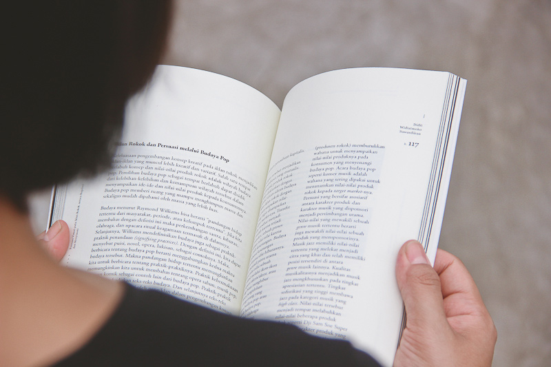
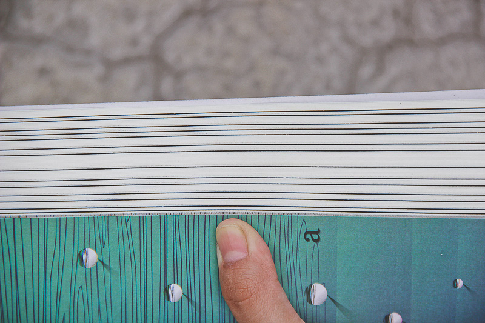
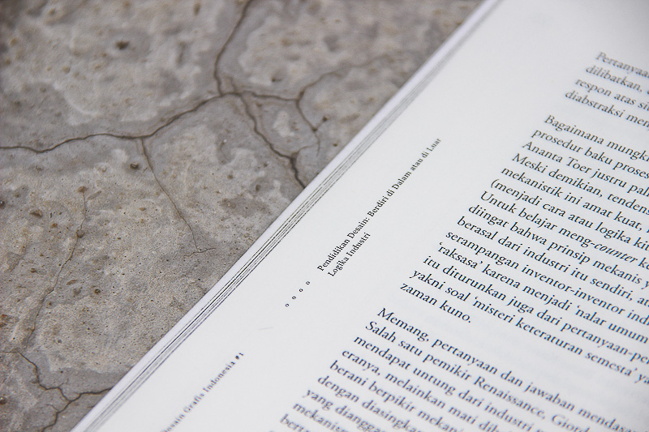
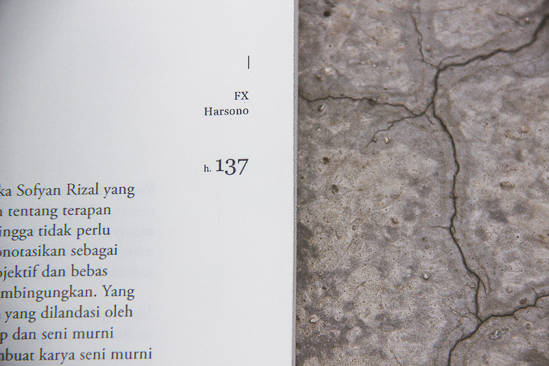
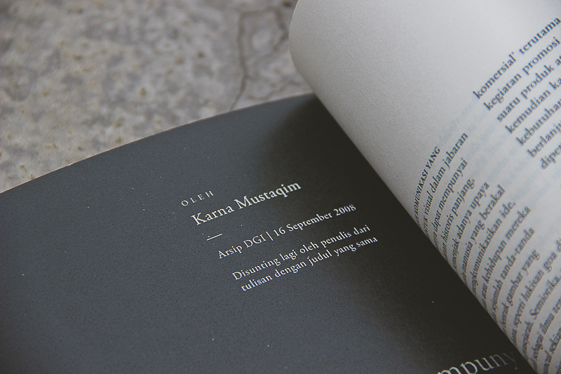
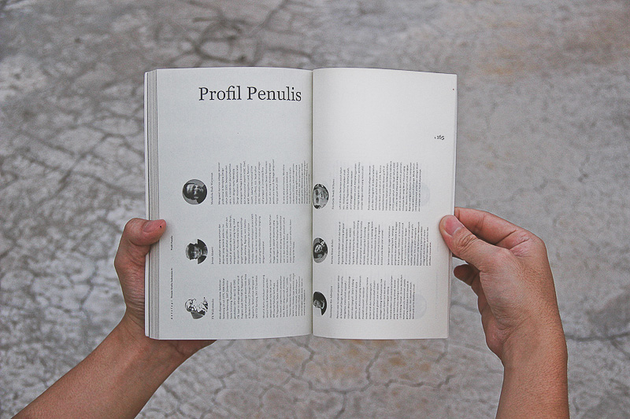
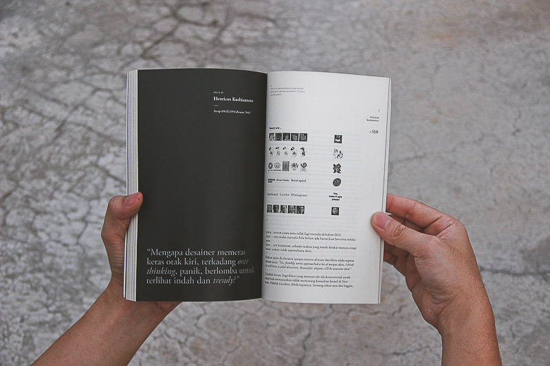
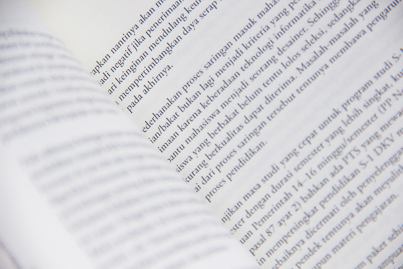
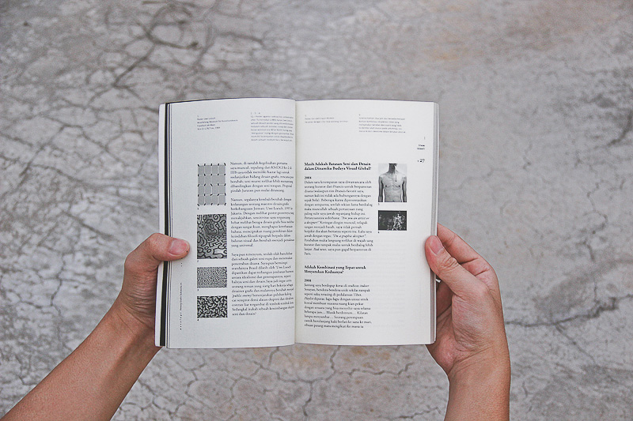
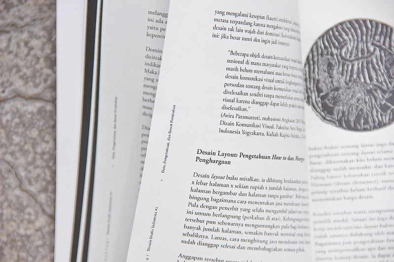
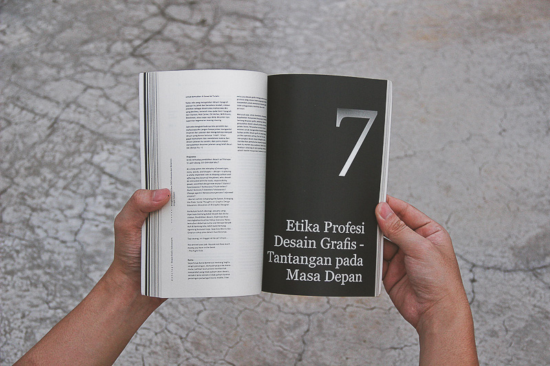
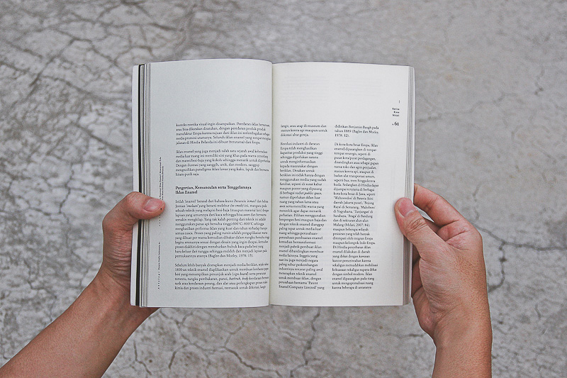
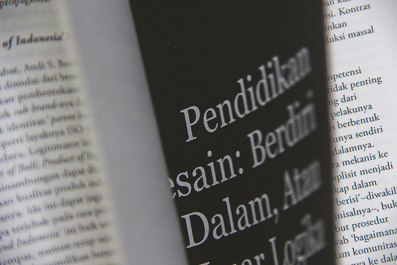
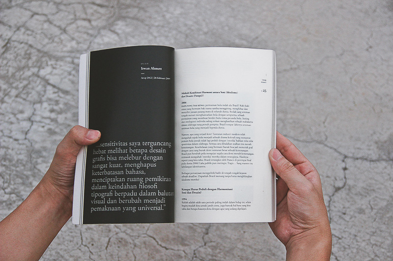
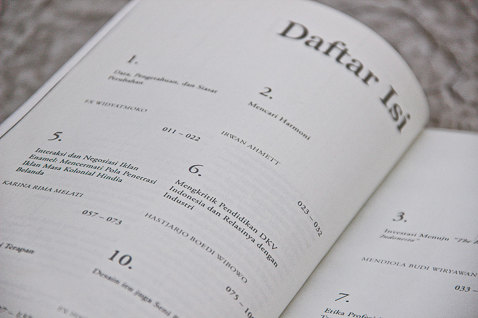
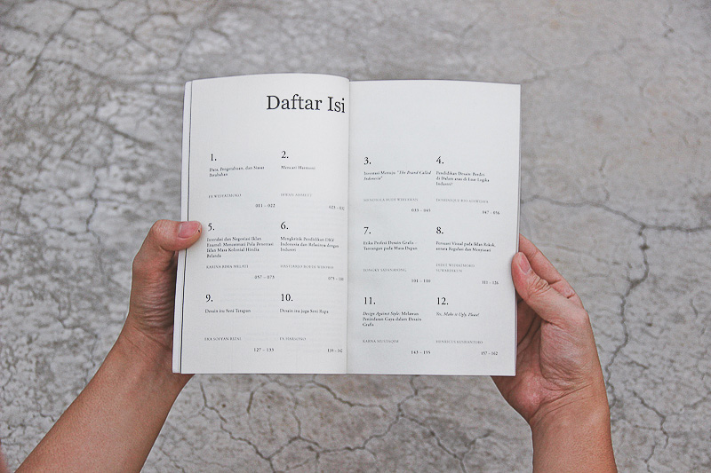
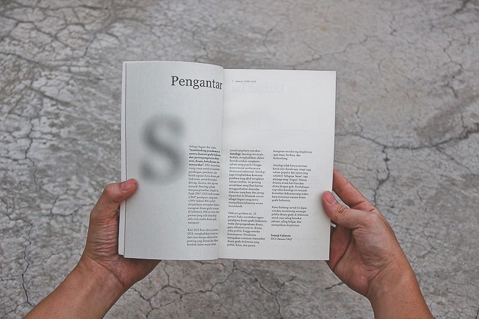
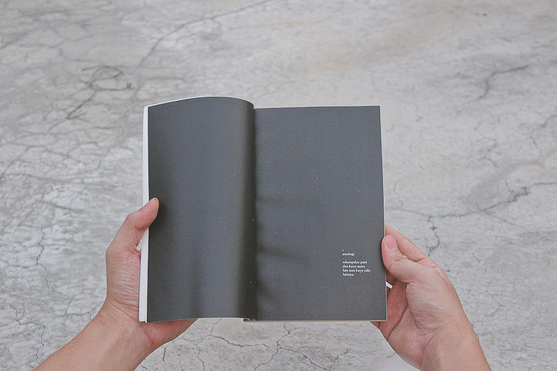
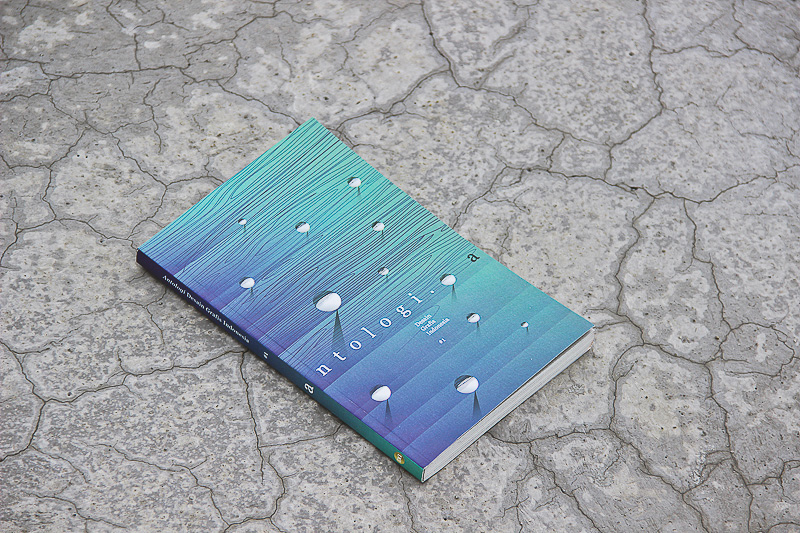